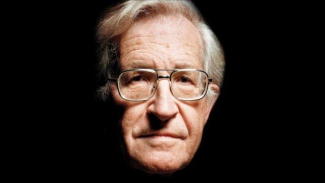

⮞AUTORES⮜ cerrar Aristóteles Kant Chomsky Biografías intelectuales: NOAM CHOMSKY  A principios de los 60, cuando pocos estadounidenses criticaban la guerra del gobierno de Estados Unidos en Vietnam, Chomsky fue de los primeros en cuestionarla y resistir contra ella. por BRUCE E. LEVINE. Nota complenta aquí Se arriesgó a acabar en prisión y a la pérdida de una carrera académica en lingüística, en la que había llegado a ser altamente estimado por sus innovadoras contribuciones. Durante más de medio siglo, Chomsky ha utilizado su posición para cuestionar todas las autoridades ilegítimas, incluyendo al Gobierno de Estados Unidos y regímenes opresores en todo el mundo. Ha dado voz a un constante desprecio al dominio de la élite —por sus atrocidades así como por su subversión de la autonomía de la clase trabajadora. La temprana comprensión de Chomsky de que las personas se puede levantar contra sistemas opresivos y crear organización cooperativa entre ellas se hizo parte de la base para su creencia en el anarquismo como una posibilidad real Chomsky describe a sus padres como “demócratas normales de Roosevelt”, aunque otros familiares eran radicales de izquierda. En su infancia, Noam afortunadamente empezó su educación en Oak Lane, una escuela experimental basada en la pedagogía de [John] Dewey donde se animaba a los niños a pensar por sí mismos y donde la creatividad era más importante que las notas. Todas las escuelas, cree Chomsky, podrían funcionar como Oak Lane pero no lo harán porque ninguna sociedad “basada en instituciones jerárquicas autoritarias toleraría un sistema escolar de ese tipo durante mucho tiempo” Los intereses tempranos de Chomsky en realidad eran políticos, no lingüísticos. Recordaba: “Desde la infancia, había estado involucrado intelectualmente en la política radical y disidente, pero intelectualmente”. En última instancia, la participación intelectual no fue suficiente. Chomsky nos cuenta: “Realmente por naturaleza soy un ermitaño, y prefería con mucho estar trabajando solo que estar en público”. Tanto con su sabiduría como con su suerte, Chomsky ha hecho más que sobrevivir hasta convertirse en uno de los anarquistas más influyentes en la historia de EE UU, un modelo inspirador para millones de antiautoritarios, especialmente jóvenes. Lo ha hecho asumiendo seriamente el pensamiento crítico y la verdad —no con credenciales convencionales y distintivos oficiales. Las verdades afirmadas por Noam Chomsky han sido poderosos desafíos a la sociedad autoritaria, pero quizás incluso más poderoso, especialmente para los jóvenes antiautoritarios, es haber dado forma a un ser humano inquebrantable. Además aquí compartimos un podcast del autor llamado Chomsky - Freedom of Speech: The Origins Podcast (audio original).